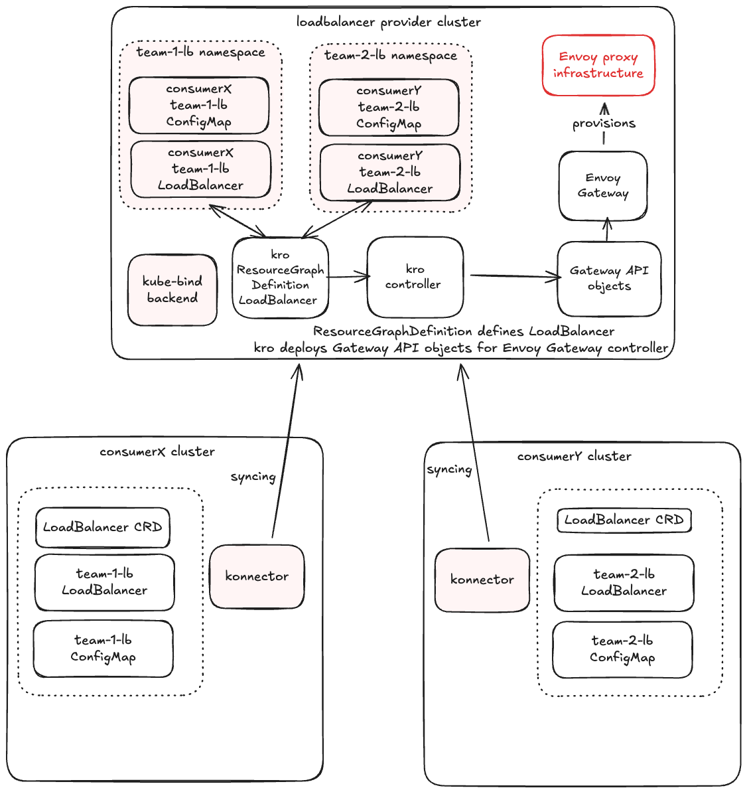

kro Integration (providing LoadBalancer as a Service)
This guide demonstrates how to use kro and Envoy Gateway to offer a "LoadBalancer as a Service" API in multi-cluster environments.
When operating multiple clusters on-premises, managing load balancer infrastructure separately for each cluster becomes operationally expensive. This integration enables a centralized load balancer cluster that serves all tenant clusters connected via converged networking solutions. By running load balancer resources in a dedicated load balancer cluster, organizations can simplify operations for application teams who can self-service load balancers without managing the underlying infrastructure and enforce consistent security policies and configuration across gateways.

In this guide in the consumer cluster we create a simple LoadBalancer object, and the provider automatically provisions an Envoy Gateway infrastructure and related Gateway and HTTPRoute to expose the service between two kind clusters.
This example includes support for syncing custom configuration (via ConfigMaps or Secrets) from consumer clusters to the provider.
Note
For this to work end-to-end, the consumer's service (backend) must be reachable from the provider cluster (e.g., via multi-cluster networking).
In this example, we simulate multi-cluster networking by exposing the consumer's backend service via NodePort and creating corresponding Service/EndpointSlice in the provider cluster. In production, you would use proper multi-cluster networking solutions like Submariner or Cilium cluster mesh.
Prerequisites
This integration guide uses two kind clusters, one provider and one consumer. Provision them using your preferred workflow and keep the resulting kubeconfigs handy.
- Provider Cluster: Runs kro, Envoy Gateway, and the kube-bind backend.
- Consumer Cluster: Runs the kube-bind konnector.
Setup On The Provider Cluster
The following sections will guide you through the one-time setup that is required for providing LoadBalancer as a Service using kro and kube-bind.
Follow the prerequisites, then select the provider:
Install Envoy Gateway
This component will handle the actual traffic routing.
helm install eg oci://docker.io/envoyproxy/gateway-helm --version v1.6.1 -n envoy-gateway-system --create-namespace
Install GatewayClass to be managed by Envoy Gateway.
kubectl apply -f - <<EOF
apiVersion: gateway.networking.k8s.io/v1
kind: GatewayClass
metadata:
name: eg
spec:
controllerName: gateway.envoyproxy.io/gatewayclass-controller
EOF
Setup Backend Application Service
Fetch the consumer cluster node IP.
export CONSUMER_NODE_IP=$(kubectl --context=consumer get nodes -o jsonpath='{.items[0].status.addresses[?(@.type=="InternalIP")].address}')
Setup the provider cluster service to allow connection to the backend application in consumer cluster.
kubectl apply -f - <<EOF
apiVersion: v1
kind: Service
metadata:
name: backend
namespace: default
spec:
clusterIP: None
ports:
- port: 30080
targetPort: 30080
protocol: TCP
name: http
---
apiVersion: discovery.k8s.io/v1
kind: EndpointSlice
metadata:
name: backend
namespace: default
labels:
kubernetes.io/service-name: backend
addressType: IPv4
ports:
- name: http
port: 30080
protocol: TCP
endpoints:
- addresses:
- ${CONSUMER_NODE_IP}
conditions:
ready: true
EOF
Install kro
kro allows you to define custom APIs (ResourceGraphDefinition) and map them to underlying resources.
Define the LoadBalancer ResourceGroup
Create a kro ResourceGraphDefinition that defines the API loadbalancers.networking.kro.run. This definition includes referencing a ConfigMap for custom routing rules (e.g., adding headers). The same way user could reference a Secret with Certificate to setup TLS.
kubectl apply -f - <<'EOF'
apiVersion: kro.run/v1alpha1
kind: ResourceGraphDefinition
metadata:
name: loadbalancers
spec:
schema:
apiVersion: v1alpha1
kind: LoadBalancer
group: networking.kro.run
metadata:
labels:
core.kbind.io/exported: "true"
spec:
domain: string
configMapRef: string
targetService: string
targetServiceNamespace: string
targetPort: integer | default=8080
status:
address: string
resources:
- id: configmap
externalRef:
apiVersion: v1
kind: ConfigMap
metadata:
name: ${schema.spec.configMapRef}
namespace: ${schema.metadata.namespace}
- id: referencegrant
template:
apiVersion: gateway.networking.k8s.io/v1beta1
kind: ReferenceGrant
metadata:
name: ${schema.metadata.name}-grant
namespace: ${schema.spec.targetServiceNamespace}
spec:
from:
- group: gateway.networking.k8s.io
kind: HTTPRoute
namespace: ${schema.metadata.namespace}
to:
- group: ""
kind: Service
- id: gateway
template:
apiVersion: gateway.networking.k8s.io/v1
kind: Gateway
metadata:
name: ${schema.metadata.name}-gw
namespace: ${schema.metadata.namespace}
spec:
gatewayClassName: eg
listeners:
- name: http
port: 80
protocol: HTTP
hostname: ${schema.spec.domain}
- id: route
template:
apiVersion: gateway.networking.k8s.io/v1
kind: HTTPRoute
metadata:
name: ${schema.metadata.name}-route
namespace: ${schema.metadata.namespace}
spec:
parentRefs:
- name: ${schema.metadata.name}-gw
hostnames:
- ${schema.spec.domain}
rules:
- backendRefs:
- name: ${schema.spec.targetService}
namespace: ${schema.spec.targetServiceNamespace}
port: ${schema.spec.targetPort}
filters:
- type: RequestHeaderModifier
requestHeaderModifier:
add:
- name: X-Custom-Message
value: ${configmap.?data["custom-header"]}
EOF
Export the LoadBalancer API
Wait for kro to create the CRD and explicitly mark that CRD as exported:
kubectl wait --for=create crd/loadbalancers.networking.kro.run --timeout=120s
kubectl wait --for=condition=Established crd/loadbalancers.networking.kro.run --timeout=120s
kubectl label crd loadbalancers.networking.kro.run core.kbind.io/exported=true --overwrite
Create a catalog Export. Crucially, we add a related-resource rule so the provider can read the ConfigMap that the consumer will create and reference.
kubectl apply -f - <<EOF
apiVersion: catalog.kbind.io/v1alpha1
kind: Export
metadata:
name: loadbalancer
spec:
title: LoadBalancer as a Service
description: Provision load balancers with kro and Envoy Gateway.
apis:
- name: loadbalancers.networking.kro.run
defaults:
relatedResources:
- group: ""
resource: configmaps
direction: FromConsumer
selector:
names:
- my-lb-config
EOF
This walkthrough keeps the ConfigMap name fixed. v2 related-resource selectors are name/label based, they do not follow spec.configMapRef.
Setup on the Consumer Cluster
Now that everything is set up, users can begin to bind to your backend and begin consuming the new API.
Login to kube-bind
Bind the Export
The command applies the bundle for the loadbalancer Export to the consumer cluster. It assumes a matching konnector is already installed separately.
Note
v2 keeps namespace and name unchanged. This walkthrough uses default in both clusters rather than the old prefixed namespace form from the legacy docs.
Create Dependencies
The consumer creates the ConfigMap that will be referenced by the LoadBalancer.
kubectl apply -f - <<EOF
apiVersion: v1
kind: ConfigMap
metadata:
name: my-lb-config
namespace: default
data:
custom-header: "hello-kube-bind"
EOF
Deploy backend application into consumer cluster.
kubectl apply -f - <<EOF
apiVersion: v1
kind: ServiceAccount
metadata:
name: backend
---
apiVersion: v1
kind: Service
metadata:
name: backend
labels:
app: backend
service: backend
spec:
type: NodePort
ports:
- name: http
port: 3000
targetPort: 3000
nodePort: 30080
selector:
app: backend
---
apiVersion: apps/v1
kind: Deployment
metadata:
name: backend
spec:
replicas: 1
selector:
matchLabels:
app: backend
version: v1
template:
metadata:
labels:
app: backend
version: v1
spec:
serviceAccountName: backend
containers:
- image: gcr.io/k8s-staging-gateway-api/echo-basic:v20231214-v1.0.0-140-gf544a46e
imagePullPolicy: IfNotPresent
name: backend
ports:
- containerPort: 3000
env:
- name: POD_NAME
valueFrom:
fieldRef:
fieldPath: metadata.name
- name: NAMESPACE
valueFrom:
fieldRef:
fieldPath: metadata.namespace
EOF
Create a LoadBalancer
Reference the ConfigMap created above.
kubectl apply -f - <<EOF
apiVersion: networking.kro.run/v1alpha1
kind: LoadBalancer
metadata:
name: my-lb
namespace: default
spec:
domain: "www.example.com"
configMapRef: "my-lb-config"
targetService: "backend"
targetServiceNamespace: "default"
targetPort: 30080
EOF
Observe the Provisioning
Provider Side: kube-bind syncs the ConfigMap back to the provider namespace. kro creates the Gateway, Route and ReferenceGrant, and Envoy Gateway provisions the load balancer.
Consumer Side: The status is updated with the provider status.
Check LoadBalancer in the consumer cluster.
Check LoadBalancer in the provider cluster and if the ConfigMap is synced.
Appendix
Test the connection with provisioned load balancer and verify that hello-kube-bind header was added from the ConfigMap.
Note
For the basic check in this example, we will do port-forward. To be able to use LoadBalancer service IP in the kind cluster you would need to setup additional measures like metalb or cloud-provider-kind.
On the provider cluster list the Envoy services and find corresponding service name for the gateway.
Port forward the related service for my-lb.
kubectl --context=provider -n envoy-gateway-system port-forward service/<generated-service-name> 8888:80
Send the request through the gateway service to your backend application.
* Host localhost:8888 was resolved.
* IPv6: ::1
* IPv4: 127.0.0.1
* Trying [::1]:8888...
* Connected to localhost (::1) port 8888
> GET /headers HTTP/1.1
> Host: www.example.com
> User-Agent: curl/8.7.1
> Accept: */*
>
* Request completely sent off
< HTTP/1.1 200 OK
< content-type: application/json
< x-content-type-options: nosniff
< date: Fri, 19 Dec 2025 19:50:35 GMT
< content-length: 521
< x-response-message: hello-kube-bind
<
{
"path": "/headers",
"host": "www.example.com",
"method": "GET",
"proto": "HTTP/1.1",
"headers": {
"Accept": [
"*/*"
],
"User-Agent": [
"curl/8.7.1"
],
"X-Custom-Message": [
"hello-kube-bind"
],
"X-Envoy-External-Address": [
"172.18.0.2"
],
"X-Forwarded-For": [
"172.18.0.2"
],
"X-Forwarded-Proto": [
"http"
],
"X-Request-Id": [
"8c23f131-a328-485f-b7e1-2e6b20362af1"
]
},
"namespace": "default",
"ingress": "",
"service": "",
"pod": "backend-77d4d5968-glxtp"
}
* Connection #0 to host localhost left intact